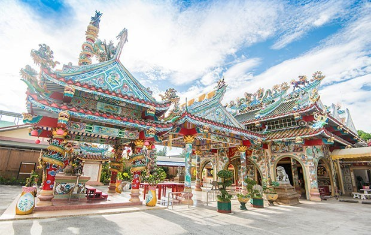

          <!-- /Navigation -->
          <div class="container">
          <!-- Page Heading -->
          <div class="row">
              <div class="col-lg-12">
                  <h1 class="page-header">สถานที่ท่องเที่ยว
                      <small></small>
                  </h1>
                  <ol class="breadcrumb">
                    <li><a href="index.html">Home</a>                    </li>
                    <li><a href="attractionsinstrad.html">สถานที่ท่องเที่ยว</a></li>
                    <li class="active">ศาลเจ้าพ่อหลักเมือง</li>
                  </ol>
              </div>
          </div>
          </div>
          <div class="text-center"><br><br>
          <h1>ศาลเจ้าพ่อหลักเมือง</h1><br>
          <br><br>

          <br><br>
      <iframe src="https://www.google.com/maps/embed?pb=!1m18!1m12!1m3!1d3899.0717996282615!2d102.5062776143476!3d12.243417733750816!2m3!1f0!2f0!3f0!3m2!1i1024!2i768!4f13.1!3m3!1m2!1s0x310443e0437c3a8b%3A0x7b55a8a3760b4571!2sChao+Por+Lak+Muang+Trat+Shrine!5e0!3m2!1sen!2sth!4v1453632676592" width="600" height="450" frameborder="0" style="border:0" allowfullscreen></iframe>
          <br><br><a href="index.html" class="btn btn-skin">close</a>
        </div>

          <!-- Core JavaScript Files -->
          <script src="js/jquery.min.js"></script>
          <script src="js/bootstrap.min.js"></script>
      	<script src="js/jquery.sticky.js"></script>
      	<script src="js/jquery.flexslider-min.js"></script>
          <script src="js/jquery.easing.min.js"></script>
      	<script src="js/jquery.scrollTo.js"></script>
      	<script src="js/jquery.appear.js"></script>
      	<script src="js/stellar.js"></script>
      	<script src="js/wow.min.js"></script>
      	<script src="js/owl.carousel.min.js"></script>
      	<script src="js/nivo-lightbox.min.js"></script>

          <script src="js/custom.js"></script>

      </body>

      </html>
